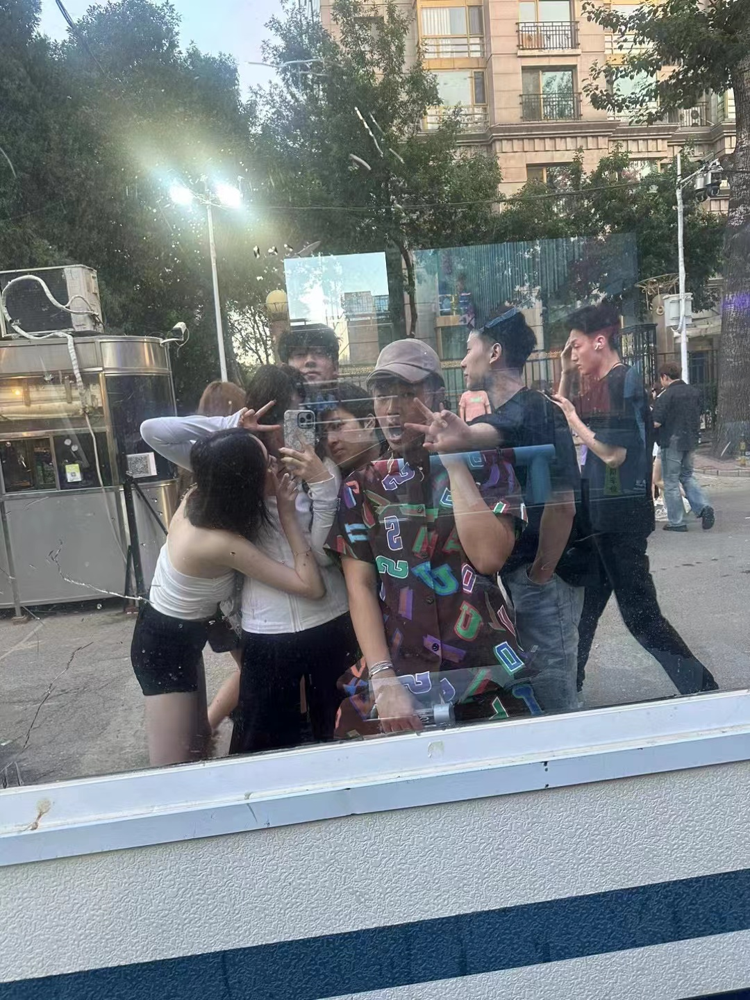

One important part of my college experience has been living in New York City. As an international student, New York has been both exciting and challenging. The city has allowed me to meet people from different backgrounds, explore different neighborhoods, and learn from everyday life outside the classroom. I enjoy walking around the city, spending time with friends, and observing how people interact in public spaces. These experiences also connect to my interest in sociology because they make me think more about culture, identity, and urban life.
